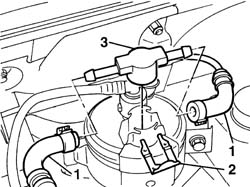

1044B26 thermostat valve on fuel return filter - r r
- Path
- Procedures > 10 ENGINE > 1044 FUEL CIRCUIT PUMP/AND DEVICES > 1044B fuel filters > 1044B26 thermostat valve on fuel return filter - r r
- Kind
- repair procedure (removal / refitting; the operation number is the code)
- Applies to
- all engines; all production periods
- Interactive page
- https://sloeber94.github.io/elrnDB-fDbl/en/#/2584453
Applies to: all engines; all production periods
 Removing
Removing
 Refitting
Refitting1. Disconnect the two fuel pipes from the thermostatic valve.
2. Remove the filter valve retaining clips.
3. Remove the thermostatic valve.

Applies to: all engines; all production periods
Refitting
RemovingTwo arrows on the valve indicate the direction of fuel flow; take care to position the valve correctly during installation.
Fit the thermostatic valve on the fuel filter.
Secure the valve with the clip removed previously.
Connect the two fuel pipes to the thermostatic valve.